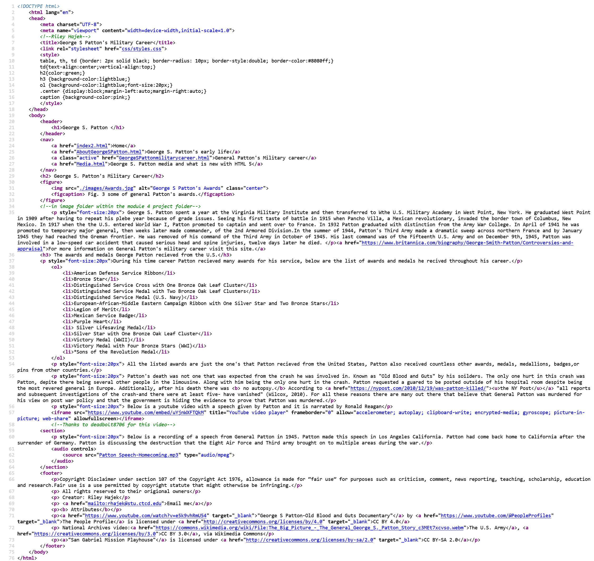
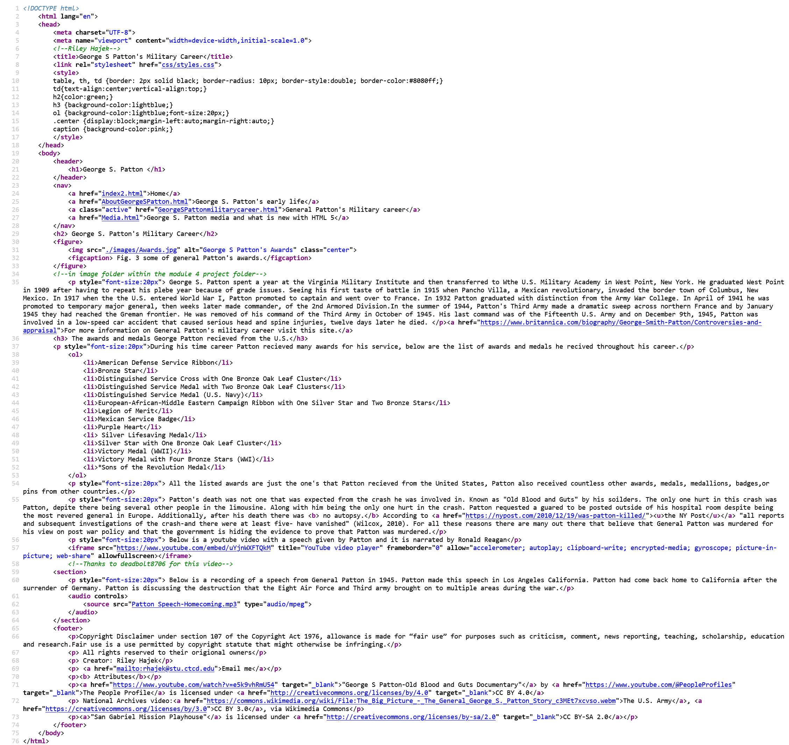

| Semantic Elements | What they are | Where they are used |
|---|---|---|
| Semantic elements include the following tags: article, aside, details, figcaption, figure, footer, header, main, mark, nav, section, summary, and time | According to W3 Schools, semantic elements are elements with a meaning. | Semantic elements are used to define different parts of a webpage, they clearly define the content unlike non-semantic elements. |
Below are some additional videos and audio recordings of General Patton. The narrator of the National Archives video should sound familiar to many even before they are introduced. It is Ronald Reagan, who at the time was known for his work in the acting field, and later became the fortieth president of the United States. The video entitled "George S. Patton - Old Blood and Guts Documentary" is a really interesting documentary that goes into further detail about General Patton's life and military career. General Patton is buried alongside his men at the Luxembourg American Cemetery in Luxembourg. The City of Luxembourg served as the headquarters of the Third Army and is in part the reason why this cemetry was choosen for Patton's final resting place. If you click on the image below it will redircet you to the Patton Society website, which will give you a lot more information about General Patton if you want to leasrn more information on "Old Blood and Guts."

 
